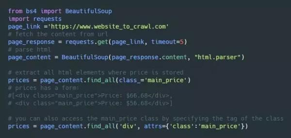
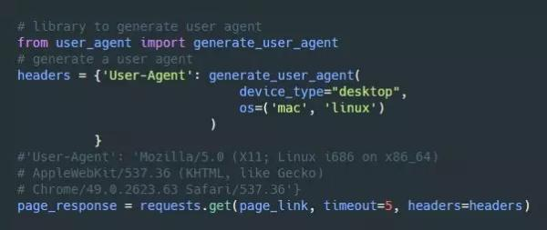
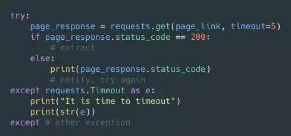
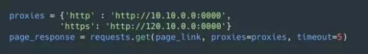
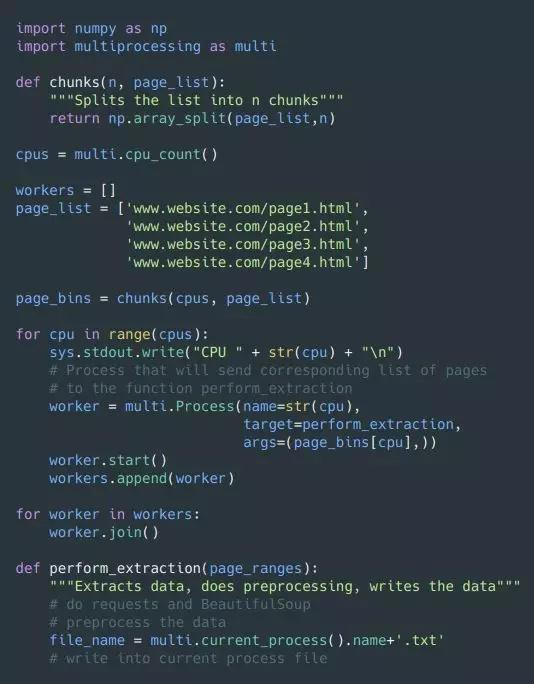

菜鸟学Python 2018-08-04 12:06:18
近年来，随着大数据、人工智能、机器学习等技术的兴起，Python 语言也越来越为人们所喜爱。但早在这些技术普及之前，Python 就一直担负着一个重要的工作：自动化抓取网页内容。
举个栗子，飞机票的价格每时每刻都在变化，甚至有些 app，你搜索的越多，价格就越贵。那不搜又不行啊，怎么样才能知道确切的价格呢？
这就是 Python 大显身手的时候啦~ 我们可以用Python写一段程序，让它自动帮你从网络上获取需要的数据——这就是所谓的“爬虫程序”——它能从你指定的一个或多个网站上读取并记录数据（比如从某个航班数据网站上读取指定日期和航线的机票信息），并根据数据进行一些自动操作，比如记录下最低价，并通知用户。
总结一下：
网页抓取是一种通过自动化程序从网页上获取页面内容的计算机软件技术。
我们这里说的“爬虫”，正式名称叫做“网页抓取”。按照维基百科的说法，网页抓取和大多数搜索引擎采用的网页索引的爬虫技术不同，网页抓取更侧重于将网络上的非结构化数据（常见的是HTML格式）转换成为能在一个中央数据库中储存和分析的结构化数据。“网页抓取也涉及到网络自动化，它利用计算机软件模拟了人的浏览。网页抓取的用途包括在线比价，联系人数据抓取，气象数据监测，网页变化检测，以及各类科研和Web数据集成等。”
对于一般用户，我们主要关注的就是网页抓取。因此，以下提到的“爬虫”一律指网页抓取所用的自动化程序。
在今天的文章里，我们将带你从最基础的工具和库入手，详细了解一下一个爬虫程序的常用结构，爬取网络数据时应该遵循哪些规则，存在哪些陷阱；最后，我们还将解答一些常见的问题，比如反追踪，该做什么不该做什么，以及如何采用并行处理技术加速你的爬虫等等。
文中介绍的每项内容都会附上 Python 的实例代码，方便你可以直接上手试玩。同时，我们还会介绍几个非常有用的 Python 库。
本教程主要分为5个部分：
1. 常用的代码库和工具
2. 从最简单的例子开始
3. 小心陷阱
4. 一些规则
5. 利用并行加速爬虫程序
在开始之前，请记住：务必善待服务器，我们并不希望把人家网站弄挂了，是吧。
1. 常用的代码库和工具
总的来说，网页抓取并没有一个一成不变的解决方案，毕竟通常每个网站的数据都因为网站自身结构的不同而具有各不相同的特性。事实上，如果你希望从某个网站上抓取数据，你需要对这个网站的结构有足够的理解，针对这个网站自己写出对应的脚本，或将某个脚本设置到符合网站的结构，才可能成功。不过，你也无须重新发明轮子：已经有很多不同的代码库，能帮你完成绝大多数底层的工作，它们多多少少都能帮上你一点忙。
1.1“检查”选项
大部分时候，在实际爬取之前，你都需要熟悉网站的 HTML 代码。你可以简单地在你想查看的网页元素上点击右键，选择“检查”（Chrome）或者“查看元素”（火狐）
之后，系统就会弹出一个调试工具区，高亮你刚选中的网页元素。以 Medium 网站的作者信息页为例：
在页面上，这个被选中的元素包含了作者的姓名、标签及个人介绍。这个元素的 class 是 hero hero--profile u-flexTOP。然后在这个元素里还有几个子元素，其中显示作者姓名的是 <h1> 标签，它的 class 是 ui-h2 hero-title，显示作者个人信息的 <p>，它的 class 是 ui-body hero-description。
你可以在 Mozilla 的开发者学院里找到更多关于 HTML 标记，以及 class 和 id 的区别等的详细介绍。
1.2 Scrapy 库
有个可独立运行，开箱即用的数据抓取框架，名叫 Scrapy。除了抓取并输出 HTML 外，这个库还提供了许多额外的功能，比如按特定的格式输出数据，记录日志等。同时，它的可定制性也很高，你可以在多个不同的进程上运行不同的爬虫，禁用 cookie ¹，设置下载延时²等。
¹ 有些站点会用 cookie 来识别爬虫。
² 数量过多的爬取请求会给网站带来额外的负担，甚至可能会导致网站宕机。
但对我个人而言，这个库有点太大太全面了：我只不过是想读取站点每个页面上的链接，按顺序访问每个链接并导出页面上的数据而已。
1.3 BeautifulSoup 和 Requests 库
BeautifulSoup 库能让你优雅地处理 HTML 源码。同时你还需要一个 Request 库，用于从指定URL获取内容。不过，你需要自己处理其他的细节问题，包括错误捕获与处理，导出数据，并行处理等。
我个人特别喜欢 BeautifulSoup 因为它迫使我自己探索许多 Scrapy 可能已经帮我处理好了的技术细节，让我从自己动手开始，从错误中学习。
2. 从最简单的例子开始
从网站上抓取数据其实还是蛮直截了当的。大部分时候我们要关注的就是 HTML 源码，找到你需要的内容所对应的 class 和 id。
下面是一个示例的网页 HTML 代码，假设我们要抓取到原价和折后价，那我们需要关注的就是 main_price 和 discounted_price 两个元素。请注意，discounted_price 元素并不总是出现。
于是，我们从最基本的代码开始：先导入需要用的 BeautifulSoup 和 Requests 库，然后发起查询请求（ requests.get() ），接着处理 html 源码，最后找到所有 class 为 main_price 的元素。
有的时候，网页的其他地方可能也有 main_price 的元素。为了避免导出无关的信息，我们可以先找到我们需要的 id='listings_prices'，然后只在这个元素的子元素中查找 main_price 元素。
3. Pitfalls 小心陷阱
3.1 检查 robots.txt
许多网站会将爬取规则和限制写在 robots.txt 里，这个文件通常是在根域名下，你可以直接在域名后面加上 /robots.txt 来获取这个文件。例如： http://www.example.com/robots.txt
robots.txt 里一般会规定哪些网页不允许被自动抓取，或者限定某个页面被机器人访问的频率。虽然大部分人确实都不理会这些，不过就算你真的不打算遵守这个规定，起码也先看一看它的内容，给点表面的尊重吧，哈哈。
Google官方的帮助文档中，对此的解释是：“robots.txt 文件中的命令并不能强制抓取工具对您的网站采取具体的操作；对于访问您网站的抓取工具来说，这些命令仅作为指令。Googlebot 和其他正规的网页抓取工具都会遵循 robots.txt 文件中的命令，但其他抓取工具未必也会如此。”
3.2 小心 HTML 里的坑
HTML 标签中可能包含 id 或 class，或二者兼有。 HTML id 是一个独一无二的标记，而 HTML class 可能在多个元素中被重用。class 名或元素内容可能会改变，而这种改变可能会让你的代码崩溃，或是返回错误的结果。
一般来说，有两种办法避免这种情况出现：
● 采用 id 来获取元素内容，而不是 class，因为 id 一般来说不那么容易改变。
● 记得检查返回值，如果返回了 None，那很可能有什么地方出了问题。
不过，因为有一些 class 可能并不总是出现（例如前面例子中的 discounted_price ），相关的元素并不一定在每个列表中都有。所以你需要统计某个元素在所有列表中出现的比例，比如计算返回 None 的次数。如果每次都返回 None，那也许你需要检查代码或者是 HTML 源码，看看是不是这个元素在网站的 HTML 中就已经改变了。
3.3 对 User agent 进行伪装
每当你访问一个网站时，网站都会通过浏览器的 user agent 获取到你的浏览器信息。有些网站如果没收到 user agent 信息，就不会返回任何内容，还有些网站会根据不同的 user agent，给不同的浏览器提供不同的内容。
网站并不会阻止正常用户的访问，但如果你用同一个 user agent 发起每秒 200 次的请求，那看起来也太可疑了一点。怎么解决呢？你可以通过 user_agent 库，产生（几乎是）随机的 user agent，也可以自定义一个特殊的 user agent。
3.4 给 request 请求设置一个超时时间
在默认状态，request 库会无止境地等待某个请求返回对应的响应内容。所以，给它设置一个参数，等待超时就断开连接，还是很有必要的。
文字版见：https://gist.github.com/jkokatjuhha/64cecefa0bf31c2b21111373c11fcc66
3.5 我是不是刚被屏蔽了？
如果你拿到的返回值经常是 404（找不到页面）、403（被禁止）、408（访问超时），就应该考虑你是不是被这个站点屏蔽了。
如果你对 HTTP 返回值不熟悉，看看我们之前解释 HTTP 返回值的漫画吧～
同样，你也应该在返回的响应中对这类错误进行处理。
文字版见：https://gist.github.com/jkokatjuhha/a33467fae4c9f7fac64f067501b484ac
3.6 切换 IP 地址
就算你采用了随机生成的 user agent，程序发起的所有连接都还用的是同一个 IP 地址：你的地址。虽然这通常并不会引起太多重视，毕竟很多图书馆、大学以及企业分别都只有少数几个 IP 地址，由这些机构内的所有计算机共同使用。然而，如果在短时间内从某一个 IP 地址发出了巨量的请求，还是会被服务器发现的。
这时候，你多年珍藏的科学上网工具就能大显身手啦。
当你采用了代理、VPN或者其他技术之后，对应的网站会将你发起的请求识别为来自相应的服务器，而不是你的。
3.7 蜜罐攻击
蜜罐是引诱网页爬虫对其进行抓取或索引，从而进行侦测的一种技术手段。
比如，网页上可能会存在一些“隐藏”链接，正常用户在访问的时候看不到这个链接，但爬虫在处理 HTML 源代码的时候会把它当作正常链接进行处理。此类链接有可能用 CSS 样式设置了 display:none，或者设置成和背景相同的颜色，甚至采用比如藏在页面中的不可见位置等手段。一旦你的爬虫访问了这类链接，你的 IP 地址可能就被记录日志，甚至服务器可能直接将你屏蔽。
另外一种蜜罐，是用超链接建立一串近乎无限深度的目录树，如果有人访问了足够深位置的内容，那基本上可以确定这人不是个普通用户。因此，在编写爬虫时，需要限制爬虫取回的页面数量，或控制遍历深度。
4. 一些规则
在抓取之前，先看看目标网站是不是已经提供了公开的 API。毕竟通过 API 能更好更快（也合法）地获取所需的信息。比如社交网站 Twitter 就提供了许多不同的 API。如果你需要抓取非常大量的数据，你应该考虑用一个数据库把这些数据整理起来，方便之后进行分析和使用。这里有一篇用 Python 操作本地数据库的教程。务必保持礼貌。有时候，甚至建议你直接和对方网站的运维人员取得联系，说不定他们能更方便快速地帮你解决你的机器人遇到的问题。
同时，再强调一遍，切记不要贪得无厌地发起太多请求，这会给目标网站带来不必要的负载。
5. 利用并行加速爬虫程序
如果你希望让你的程序并行运行，一定要小心检查自己的代码，否则可能你会突然发现自己正在榨干目标服务器的资源。同时，请一定一定认真看完上一节的几个规则。最后，你需要确保自己已经理解了并行处理和并发处理，多线程和多进程之间的区别。
如果你在抓取过程中还要对巨量的页面信息进行预处理，你会发现平均每秒钟能发起的请求数其实是相当少的。
在我个人的另一个抓取出租房价格的项目里，因为抓取时的预处理信息量实在太大，每秒能发起的请求数大约只有1个。处理 4000 个左右的链接，需要程序运行上大约一个小时。
为了并行发送请求，你可能需要采用一个叫做 multiprocessing 的 Python 库。
假设我们有100个页面要发起请求，我们希望给将任务量平均分给每个处理器。假设你有 N 个 CPU，你可以把所有的页面分成 N 个部分，每个 CPU 处理一个部分。每个进程都将有自己的名字，目标函数以及需要处理的参数。每个进程的名字可以在之后被调用，以便将获取到的信息写入具体的文件中。
后来，我将 4000 个页面分成 4 份，我的 4 个 CPU 各分到 1000 个，于是总的请求数增加到 4 个/秒，总的抓取时间就减少到了 17 分钟左右。
最后，祝大家爬得开心顺利！记得多关注我哦！！
最后的文末知识点摘要：Python解惑之：整数比较
在 Python 中一切都是对象，毫无例外整数也是对象，对象之间比较是否相等可以用 ==，也可以用 is。 ==和 is操作的区别是：
is比较的是两个对象的id值是否相等，也就是比较俩对象是否为同一个实例对象，是否指向同一个内存地址。
==比较的是两个对象的内容是否相等，默认会调用对象的 __eq__()方法。
清楚 is和 ==的区别之后，对此也许你有可能会遇到下面的这些困惑，于是就有了这样一篇文章，试图把Python中一些隐晦的东西趴出来，希望对你有一定的帮助。我们先来看两段代码：
片段一：
>>> a = 256
>>> b = 256
>>> a == b
True
>>>
片段二：
>>> a = 256
>>> b = 256
>>> a is b
True
>>>
在交互式命令行执行上面两段代码，代码片段一中的 a==b返回 True很好理解，因为两个对象的值都是256，对于片段二， a is b也返回True，这说明a和b是指向同一个对象的，可以检查一下他们的id值是否相等：
>>> id(a)
8213296
>>> id(b)
8213296
>>>
结果证明他俩的确是同一个对象，指向的是同一个内存地址。那是不是所有的整数对象只要两个对象的值（内容）相等，它们就是同一个实例对象呢？换句话说，对于整数对象只要 ==返回 True， is操作也会返回 True吗？带着这个问题来看下面这两段代码：
片段一：
>>> a = 257
>>> b = 257
>>> a == b
True
>>>
片段二：
>>> a = 257
>>> b = 257
>>> a is b
False
>>>
对于257， a is b返回的竟然是False，结果可能在你的意料之中，也有可能出乎你的意料，但不管怎么，我们还是要刨根问底，找出问题的真相。
解惑一
出于对性能的考虑，Python内部做了很多的优化工作，对于整数对象，Python把一些频繁使用的整数对象缓存起来，保存到一个叫 small_ints的链表中，在Python的整个生命周期内，任何需要引用这些整数对象的地方，都不再重新创建新的对象，而是直接引用缓存中的对象。Python把这些可能频繁使用的整数对象规定在范围[-5, 256]之间的小对象放在 small_ints中，但凡是需要用些小整数时，就从这里面取，不再去临时创建新的对象。因为257不再小整数范围内，因此尽管a和b的值是一样，但是他们在Python内部却是以两个独立的对象存在的，各自为政，互不干涉。
弄明白第一个问题后，我们继续在Python交互式命令行中写一个函数，再来看下面这段代码：
片段一：
>>> c = 257
>>> def foo():
... a = 257
... b = 257
... print a is b
... print a is c
...
>>> foo()
True
False
呃，什么情况，是的，你没看错，片段一中的这段代码 a、b 值都是257的情况下，出现了 a is b返回 True，而 a is c 返回的 False，a、b、c的值都为257，为什么会出现不同的结果呢？这对于刚刚好不容易建立起来的认知就被彻底否决了吗，那这段代码中究竟发生了什么？难道解惑一中的结论是错误的吗？
解惑二
A Python program is constructed from code blocks. A block is a piece of Python program text that is executed as a unit. The following are blocks: a module, a function body, and a class definition. Each command typed interactively is a block. A script file (a file given as standard input to the interpreter or specified as a command line argument to the interpreter) is a code block. A script command (a command specified on the interpreter command line with the ‘-c‘ option) is a code block. structure-of-a-program
为了弄清楚这个问题，我们有必要先理解程序代码块的概念。Python程序由代码块构成，代码块作为程序的一个最小基本单位来执行。一个模块文件、一个函数体、一个类、交互式命令中的单行代码都叫做一个代码块。在上面这段代码中，由两个代码块构成， c = 257作为一个代码块，函数 foo作为另外一个代码块。Python内部为了将性能进一步的提高，凡是在一个代码块中创建的整数对象，如果存在一个值与其相同的对象于该代码块中了，那么就直接引用，否则创建一个新的对象出来。Python出于对性能的考虑，但凡是不可变对象，在同一个代码块中的对象，只有是值相同的对象，就不会重复创建，而是直接引用已经存在的对象。因此，不仅是整数对象，还有字符串对象也遵循同样的原则。所以 a is b就理所当然的返回 True了，而 c和 a不在同一个代码块中，因此在Python内部创建了两个值都是257的对象。为了验证刚刚的结论，我们可以借用 dis模块从字节码的角度来看看这段代码。
可以看出两个257都是从常量池的同一个位置 co_consts[1]获取的。
总结
一番长篇大论之后，得出两点结论：1、小整数对象[-5,256]是全局解释器范围内被重复使用，永远不会被GC回收。2、同一个代码块中的不可变对象，只要值是相等的就不会重复创建新的对象。似乎这些知识点对日常的工作一点忙也帮不上，因为你根本不会用 is来比较两个整数对象的值是否相等。那为什么还要拿出来讨论呢？嗯，程序员学知识，不应该浅尝辄止，要充分发挥死磕到底的精神。
本篇文章分享就到此结束，部分素材来源网络与自己整理，如有侵权，请联系删除。希望本次的知识点分享对你有所帮助。如果你在学习Python的过程中遇见了很多疑问和难题，你可以关注我的头条号并在后台私信我，我做开发已经很多年了，也很乐意为你解决问题，在右上角“私信”给我“资料”两个关键词，会自动回复你交流学习群进行下载工具和问答。
本页共140段，8271个字符，19412 Byte(字节)